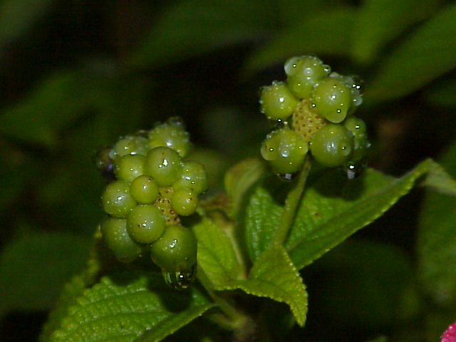

植物名稱：馬纓丹
植物簡介：馬纓丹屬於蔓狀的常綠灌木。一叢花絮之中常有很多顏色變化，所以別稱有五色梅、五彩花；枝葉含有特別的刺激氣味，所以馬櫻丹也有臭草、臭金鳳等別稱。 馬纓丹屬於有毒植物，花落之後會結綠色的果實，成熟後的果實呈黑紫色，莖葉與果實中含有破壞代謝的毒性。由於花很容易開，所以結成果實的量也相當多，傳播性很強。 馬纓丹的周圍常常都沒有其他植物，排他性非常強烈。莖上長有倒刺，一般動物也難以直接踐踏走過，所以年年擴充地盤成長也很快速，是種相當強勢的侵略性植物。由於極其粗生，無論雨水充足，抑或乾旱地區，都見其影蹤，甚至趕絕原生草木，被列為世界百大外來入侵種。
更多圖片：
